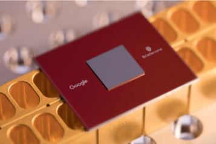

Computação Quântica
Atualmente seu uso é limitado a capacidade de execução devido à dificuldade da aplicação teórica na física e seus critérios de incertezas, assim como a necessidade comportamental dos materiais próximo ao conceito de perfeição e simetria, além do desconhecimento e abstração do seu próprio funcionamento.
O mundo foi tomado por novas tecnologias que estão em constante mudança. As placas mães, os
processadores, cada parte da tecnologia é melhorada quando menor e é aí que a física moderna
revoluciona nossa sociedade, seu objeto de estudo é o que não podia antes ser visto, é o que só
recentemente está sendo descoberto e entendido, o universo micro, nano, pico e o comportamento das
partículas nesses universos.
Até o fim do século XIX, a mecânica clássica juntamente com o termodinâmica e o eletromagnetismo
formavam a linha de frente dos estudos físicos, entretanto, no início do século XX, três problemas
principais que não puderam ser descritos pelas ferramentas teóricas da física contemporânea
impulsionaram os estudos desta época e revolucionaram a física: o efeito fotoelétrico, a radiação
espectral do hidrogênio e a radiação de corpo negro, como descrito por Gil da Costa Marques e Maria
José Bechara, 2007.
A mecânica quântica então começa a caminhar a partir da formulação de Max Planck (uma das maiores
referências em estudos de mecânica quântica) formulando as leis da radiação do corpo negro; seguido
por Einstein resolvendo o efeito fotoelétrico, além da sua famigerada Teoria da Relatividade que
revolucionou a mecânica; tem-se também a lei de Stefan-Boltzmann e a série de Balmer, todas
resoluções para os problemas elementares da física quântica.
Princípio de Incerteza de Heisenberg
O princípio de incerteza de Heisenberg é obtido pelo físico de mesmo sobrenome a partir da expansão
do conceito já existente na mecânica quântica a época de suas observações (fim da década de 1920):
não se podia medir com precisão a posição e o momentum com valores numéricos ao mesmo tempo e também
do postulado quântico de Bohr (Chibeni apud Bohr, 1928).
De maneira geral, Heisenberg buscou explicar as discrepâncias internas presentes na já aceita, porém
cheia de inconsistências, teoria quântica.
Os argumentos utilizados por Heisenberg podem ser divididos entre o ontológico: que trata do ser e o
epistemológico: que trata do nosso conhecimento.

Versão epistemológica
Esta é a versão pela qual se estabelece o nome de princípio da incerteza. Heisenberg afirma que para
que se possa fazer inferir algo a partir de uma afirmação "é preciso especificar experimentos
definidos com o auxílio dos quais se pretenda medir a ‘posição do elétron’; caso contrário, a
expressão não terá nenhum significado. "(Chibeni apud Heisenberg, 1927 p. 64).
Logo, somente um experimento por meio do qual se estabeleça a aplicação do conceito ou se possa
atribuir um valor numérico preciso conferem legitimidade a um conceito.
Nessa seção, o raciocínio considerado é o de que cada objeto que se procura observar é uma partícula
e tem momento e posição bem definidos, porém partindo desde o princípio da imprecisão da medida no
experimento feito por Heisenberg e sabido que as grandezas não poderão ser determinadas
experimentalmente com alta precisão, o raciocínio inicial cai por terra.
Nesta versão, e somente nela, a denominação usual de “princípio da incerteza” é justificada. Ora,
incerteza é uma noção epistêmica, ou seja, relativa ao nosso conhecimento. Nesta versão, as relações
de Heisenberg não expressariam, pois, uma característica física dos objetos (com na versão
precedente), mas uma característica de nosso conhecimento acerca dos objetos. (Chibeni, 2004)
As relações de Heisenberg, portanto, mostra como evitar conflitos de conceitos e demonstra os
limites nos quais a concepção de partícula pode ser aplicada.
Superposição
A superposição é a compreensão da sobreposição de possíveis estados para um mesmo sistema como
descrito a partir das funções de onda.
"Seguindo a nomenclatura de Hughes, dados dois estados puros | pi › e | pj › tais que, para dois
resultados diferentes xi e xj , pi(xi) = 1 (a probabilidade de, para o estado | pi › , se obter o
valor xi , é igual a 1) e pj(xj) = 1 (a probabilidade de, para o estado | pj ›, se obter o valor xj
, é igual a 1), pode-se construir um outro estado puro | pk › em MQ tal que para qualquer resultado
xn (n = i ou j) do experimento em questão, pk(xn) = cipi(xn) + cjpj(xn), onde 1 0 ≤ ci ≤ , 0 ≤ cj ≤
1 e ci + cj = 1. Então, 0 ≤ pk(xi) = ci ≤ 1. Rompe-se desta forma a identidade que a Física Clássica
estabelece entre estado de um sistema e resultado de uma medição, ou seja, o resultado de uma
medição não informa de forma completa sobre o estado do sistema antes da medida, ocorrendo apenas
relações em forma probabilística." (Greca e Herscovitz, 2005)
É na tentativa de explicar esse princípio que Schrödinger formularia o paradoxo do gato (um
Gedankenexperiment - experimento imaginário), onde o gato poderia estar tanto vivo quanto morto
dependendo da desintegração de um átomo que poderia ou não ocorrer, ou seja, o estado atual do gato
nada mais seria do que a combinação de todos os possíveis estados que ele teria dado a natureza
incerta do fato. Com o passar do tempo e o avanço dos estudos, os limites para até aonde a mecânica
quântica poderia descrever os fenômenos (micro/macro) ficou mais claro o paradoxo de Schrödinger se
torna apenas uma ilustração didática para compreensão do fenômeno da superposição.
O efeito em questão se tornou o principal expoente da computação quântica a partir do momento em que
em 1996, um grupo de cientistas do National Institute of Standards and Technology, Colorado, Estados
Unidos, conseguiu criar "gatos de Schrödinger" com elétrons e átomos, fazendo com que estes
estivessem em dois lugares ao mesmo tempo, o que possibilita a computação quântica.
O início da computação quântica
A computação quântica começou a ser pesquisada por volta da década de 80, quando passaram a buscar
uma união entre a computação e as leis da física e da mecânica quântica em virtude das previsões de
limite para a redução na escala da tecnologia usada na computação e para melhor manipulação dos
componentes no caso de sucesso com sua redução. Tais previsões foram propostas com base no que ficou
conhecido como lei de Moore, a qual, de modo resumido, dizia que o número de transistores nos
computadores, e o poder de processamento deles, dobraria a cada 2 anos (Moore, G.E., 1965). E se
manteve válida. (Junior, A.C.)
Primeiros avanços
Paul Benioff em 1981, foi o primeiro a aplicar teorias quânticas para computadores com sua Máquina
de Turing quântica. A Máquina de Turing consiste em uma fita dividida em células, que se move para a
direita ou para a esquerda, lendo e gravando informações em bits. Já a máquina quântica de Benioff,
continha células que podiam comportar o estado de superposição do bit quântico. O problema para
construir um computador quântico estava na manipulação dos qubit sem alterar a informação que
carregam, pois até uma alteração qualquer pode alterar o seu estado.
Em 1981, em uma conferência no MIT, o físico Richard Feynman afirmou que a computação clássica não
seria capaz de modelar com eficiência sistemas da mecânica quântica, os quais só poderiam ser
modelados por outro sistema quântico. Como solução, propôs a utilização de sistemas quânticos em
computadores, que desenvolveriam um processamento superior aos computadores comuns e seriam muito
uteis nessas simulações de experimentos da física quântica. Tais máquinas ainda não existiam, mas
poderiam ser criadas e poderiam também servir como um simulador quântico universal (Feynman, R.P.,
1981; Melo, B.L.M; Christofoletti, T.V.D., 2003; Junior, A.C.).
Em 1985, David Deustsch, da Universidade de Oxford, fez a descrição do primeiro computador quântico
universal, que seria capaz de simular o funcionamento de outro computador quântico e cria também o
primeiro algoritmo quântico.
IBM
Em dezembro de 2001, foi construído um computador quântico de 7 qubits pelos cientistas do Centro de
Pesquisas da IBM (International Business Machines Corporation) em Almaden. Com o algoritmo de Shor
implementado, ele conseguiu fatorar corretamente o número 15. Era um resultado simples, mas ele
mostrou que a computação quântica era viável, embora ele ainda não fosse o suficiente para quebrar
um sistema de criptografia. As maiores dificuldades eram tecnológicas e não teóricas. Um exemplo era
a alta incidência de erros nos computadores quânticos.
O computador foi implementado através de uma molécula com 7 spins, sendo seu núcleo constituído por
5 átomos de flúor e 2 de carbono. A programação era feita por pulsos de radiofrequência e a leitura
de resultados, por ressonância magnética nuclear (RMN), similar à tecnologia de aparelhos de
tomografia computadorizada de hospitais. Para ser operado, exigia baixas temperaturas para reduzir
os erros.
Computação híbrida
Em 2004, uma equipe liderada por Charles Bennett, realizou pela primeira vez o teletransporte com
átomos, isso é, comunicação de informações de 2 pontos distantes sem que a informação percorresse
essa distância. Anos depois, em 2007, foi criado um computador híbrido com processador quântico de
16 qubits que realizaria tarefas praticas, como resolver problemas lógicos e soluções para jogos de
Sudoku. Nascia o Orion, desenvolvido pela canadense D-Wave. No mesmo período, a Universidade de
Yale, nos Estados Unidos, criou seu primeiro computador quântico rudimentar que também executava
operações simples.
Em 2011, a D-Wave lançou o primeiro computador quântico para comercialização, o D-Wave One, com um
processador de 128 qubits. No entanto, ainda precisava ser utilizado em conjunto com computadores
convencionais.
E desde então, a pesquisa não parou, levando a novos modelos, tecnologias e descobertas na área.
Empresas inclusive formam parcerias buscando avanços. Como a Google e Nasa que juntas conseguiram um
computador quântico com o processador Bristlecone que possui 72 qubits (Kelly, 2018).

Para saber mais, acesse o link ou baixe arquivos relacionados ao assunto aqui.